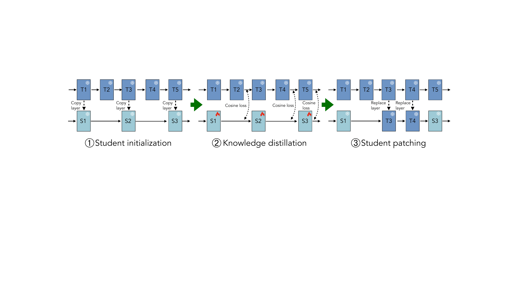
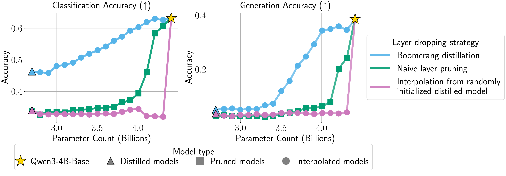
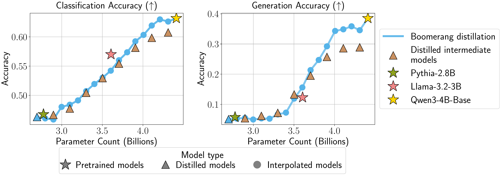
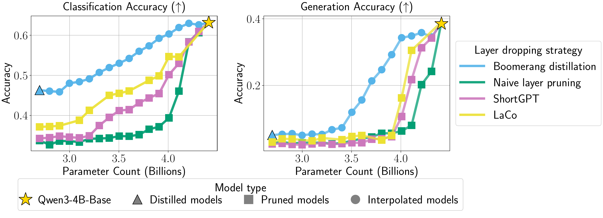

Boomerang Distillation Enables Zero-Shot Model Size Interpolation
Patch a distilled student with blocks of teacher layers to build a whole family of intermediate-size models — with no extra training
Large language models are deployed under many different memory and compute budgets, but model families are usually built by training each size from scratch — expensive, and only coarse-grained. This paper identifies a phenomenon the authors call boomerang distillation: starting from a large teacher, you first distill down to a small student, then progressively rebuild intermediate-size models by re-inserting blocks of teacher layers into the student, with no additional training. The resulting zero-shot interpolated models scale smoothly in size and performance between student and teacher, often matching or surpassing pretrained or separately distilled models of the same size — provided the student is initialized from teacher weights and trained with an alignment loss.
The problem: model families are expensive and coarse
Large language models are deployed across wildly different hardware, from edge devices to large clusters, each with its own memory, latency, and energy budget. To serve this range, developers ship families of models at several parameter scales (Yang et al. 2025; Grattafiori et al. 2024). But building those families is costly: the conventional recipe trains each size independently, so families end up with only a few coarse-grained options and large gaps in the efficiency–capability trade-off.
This paper asks whether a single distilled student can be turned into a whole spectrum of intermediate-size models — without any additional training.
Boomerang distillation
The method patches a distilled student with blocks of teacher layers. Let the teacher \mathcal{T} have N transformer layers and the student \mathcal{S} have M < N layers from the same family, with all layers sharing the same hidden dimension. The procedure has three stages (Figure 1):
Student initialization. Partition the teacher’s N layers into M contiguous blocks and initialize each student layer from the first layer of its block, copying the teacher’s embedding layer and LM head. Following prior work, this is a layer-dropping initialization (Chen et al. 2025).
Knowledge distillation. Train the student with three terms: the cross-entropy loss \mathcal{L}_{\mathrm{CE}}, a temperature-scaled KL divergence to the teacher’s logits (Hinton et al. 2015), and a per-layer cosine-distance alignment loss (Sanh et al. 2019) that keeps each student layer’s hidden states close to the output of its corresponding teacher block. The combined objective is
\mathcal{L}(x,\theta_S)=\mathcal{L}_{\mathrm{CE}} +\lambda_{\mathrm{KL}}\,\mathcal{L}_{\mathrm{KL}} +\lambda_{\cos}\sum_{i=1}^{M}\mathcal{L}_{\cos}^{(i)} .
The alignment term is what makes the next step work: it forces each student layer to approximate the output of the teacher block it replaced.1
Student patching. After training, replace a student layer with its corresponding block of teacher layers. Doing this for any subset of layers yields a model of intermediate size — the embedding and LM head are taken from whichever model contributes the first and last layers, respectively. No weights are updated.
1 An open question the authors raise: whether comparable performance is possible without keeping the teacher weights resident in memory, which would cut the memory footprint of the patched models.

The interpolation phenomenon
Patching the distilled student with teacher blocks produces models whose size and performance interpolate smoothly between student and teacher (Figure 2). Crucially, two baselines fail to show this behavior:
- Naive layer pruning — the same teacher layers, but without distillation training — collapses sharply below 4\mathrm{B} inference-time parameters.
- Distillation from a randomly initialized student gains almost nothing from patching teacher layers.
Together these show that both teacher-weight initialization and a distillation objective are necessary — layer pruning or distillation alone is not enough.

The authors note that interpolation is smoother for classification accuracy than for generation accuracy — consistent with prior observations that errors accumulate more in heavily pruned models (Men et al. 2024). The phenomenon is not specific to Qwen: it also appears with Qwen3-8B-Base, Pythia-6.9B, and Llama-3.2-3B as teachers, which the authors present as evidence that it is a general property of distilled LLMs.
How good are the interpolated models?
Compared against intermediate models trained individually via standard knowledge distillation (same layers, same loss, 2.1\mathrm{B} tokens), the zero-shot interpolated models are competitive across the size range, and actually outperform the separately distilled models at larger sizes (Figure 3). The authors attribute the gap at large sizes to catastrophic forgetting: updating the teacher’s weights on a presumably lower-quality corpus (the Pile) degrades them, whereas patching the original teacher weights back in preserves the quality of the original pretraining.

The practical payoff: only a single small student needs to be trained. Every intermediate model is then obtained by patching teacher weights with no further training, reducing the cost of building a fine-grained family by orders of magnitude.
The same effect appears in off-the-shelf models too. Patching DistilBERT with BERT layers (Devlin et al. 2019; Sanh et al. 2019) gives clean interpolation in pseudo-perplexity without any training; patching DistilGPT2 with GPT2 layers (Radford et al. 2019) interpolates less cleanly but still beats naive layer pruning.
Versus dedicated pruning methods
Because boomerang distillation creates models of different depths with no retraining, the closest comparison is to layer-pruning methods. Against LaCo (Yang et al. 2024) and ShortGPT (Men et al. 2024), the interpolated models are substantially better across all intermediate sizes (Figure 4) — the gap is especially stark on generation tasks, where the pruning baselines collapse to near-zero accuracy after only a few layers are removed.

What makes it work
An ablation over the loss terms isolates the role of alignment. The full objective (cross-entropy + KL + per-layer cosine) yields the lowest-perplexity interpolated models and the most stable behavior, with the per-layer cosine loss mattering most at the first and last layers — consistent with prior findings that the outermost layers are more distinct and less interchangeable than the middle ones (Gromov et al. 2024; Men et al. 2024). Notably, the phenomenon still emerges even with a cross-entropy-only objective, which the authors read as evidence that initializing the student from teacher weights is itself a central driver.
| Loss objective | Interpolation behavior |
|---|---|
| Cross-entropy only (\mathcal{L}_{\mathrm{CE}}) | Phenomenon still emerges; less stable at size extremes |
| + KL divergence (\mathcal{L}_{\mathrm{CE}}+\mathcal{L}_{\mathrm{KL}}) | Improved, but instability remains without alignment |
| + alignment (\mathcal{L}_{\mathrm{CE}}+\sum_i\mathcal{L}_{\cos}^{(i)}) | Smoother interpolation across sizes |
| Full objective (all three terms) | Lowest perplexity; most stable across all sizes |
Takeaway
Boomerang distillation reveals that zero-shot model-size interpolation is not only possible but effective: from a single student–teacher pair, one can construct a fine-grained family of intermediate models by patching teacher layers back into a distilled student — no per-size training run required. The two essential ingredients are teacher-weight initialization and an alignment loss during distillation. Code and models are available from the authors’ repository.
Citation
@inproceedings{kangaslahti2025,
author = {Kangaslahti, Sara and V. Nayak, Nihal and Geuter, Jonathan
and Fumero, Marco and Locatello, Francesco and Alvarez-Melis, David},
title = {Boomerang {Distillation} {Enables} {Zero-Shot} {Model} {Size}
{Interpolation}},
booktitle = {International Conference on Learning Representations
(ICLR)},
date = {2025-10-06},
url = {https://arxiv.org/abs/2510.05064}
}